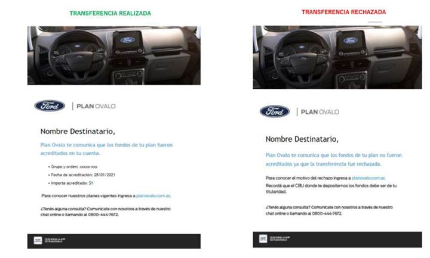
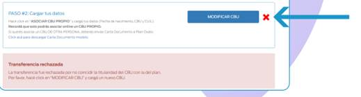

Se informará en el anotador de AS400 la fecha, motivo e importe de la transferencia realizada.
Una vez efectuadas, se indicará en un plazo máximo de 72 hs el motivo del rechazo (en caso de existir). A partir del momento en el cual se verifica el rechazo en el anotador, el día siguiente el cliente podría modificar su CBU en VOPA. Si no tiene esta opción y el CBU es propio, puede enviar constancia de CUIL + CBU a lgrupo@ford.com indicando su grupo y orden; si el CBU es de un tercero, deberá enviar CD.
Todos los clientes que cargaron su CBU en VOPA recibirán este correo dependiendo el rechazo o aprobación

Los motivos de rechazos más frecuentes son:
o La cuenta está en otra moneda que no es pesos
o La cuenta está embargada
o CVU (Clave Virtual Uniforme) no es válido: Mercado Pago, bancos virtuales
o Si cobra un plan Social no es válido
o No es una cuenta propia
o Si carga CBU de tercero, ingresan el CUIL propio
Si el cliente no está comprendido dentro de una de las situaciones anteriores e indica que su cuenta esta ok, cargar un reclamo solicitando que se reenvíe la transferencia:
o Ahorristas Ka: reclamo KATRAN
o Rescindidos, Cancelados, Resarcimiento, Pagos excedentes: reclamo REI004
Si está comprendido dentro de una de las situaciones anteriores, puede volver a cargar su CBU en VOPA (si carga el mismo le aparecerá el rechazo); si no tiene otra cuenta, debe enviar CD solicitando el depósito en la cuenta de un tercero.
Modelo CD en https://www.planovalo.com.ar/ovalo/Recursos/uploads/Modelo_Carta_Documento-CBU_de_tercero(no_propio).pdf
Si el cliente indica que los datos cargados son correctos y su cuenta esta ok, se puede solicitar mediante reclamo el motivo extendido del rechazo, a saber:
o Ahorristas Ka: reclamo KATRAN
o Rescindidos, Cancelados, Resarcimiento, Pagos excedentes: reclamo REI004
Si un cliente tiene una transferencia rechazada y verificó el error (por ejemplo, intentaba cargar un CBU de Tercero y puso su CUIL) deberá aguardar a que la misma sea procesada en la web para poder realizar una nueva carga de un CBU propio o de tercero. Si se contacta por este motivo, puede darse la situación de que transcurrieron los plazos y el cliente no cuenta con la habilitación del punto de modificación del CBU en VOPA:
o en caso de no tener la opción (teniendo en cuenta que son pocos clientes y se encuentra pendiente de corrección) y el CBU que quiere cargar ES PROPIO podrá enviar a lgrupo@ford.com la constancia de CBU + CUIL informando su grupo y orden en el título del mail.
o en caso de no tener la opción (teniendo en cuenta que son pocos clientes y se encuentra pendiente de corrección) y el CBU que quiere cargar NO ES PROPIO deberá enviar CD informando grupo, orden, CUIL + CBU de la cuenta donde quiera acreditar los fondos.
